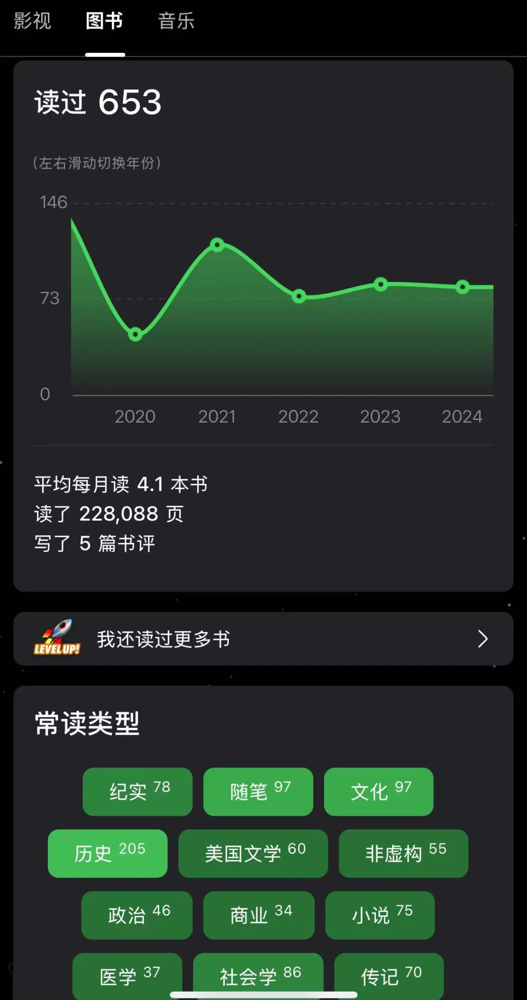
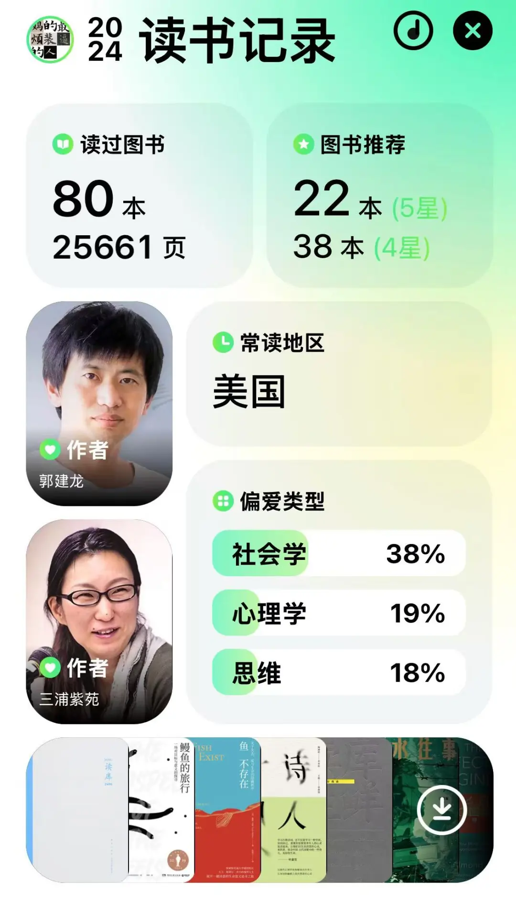
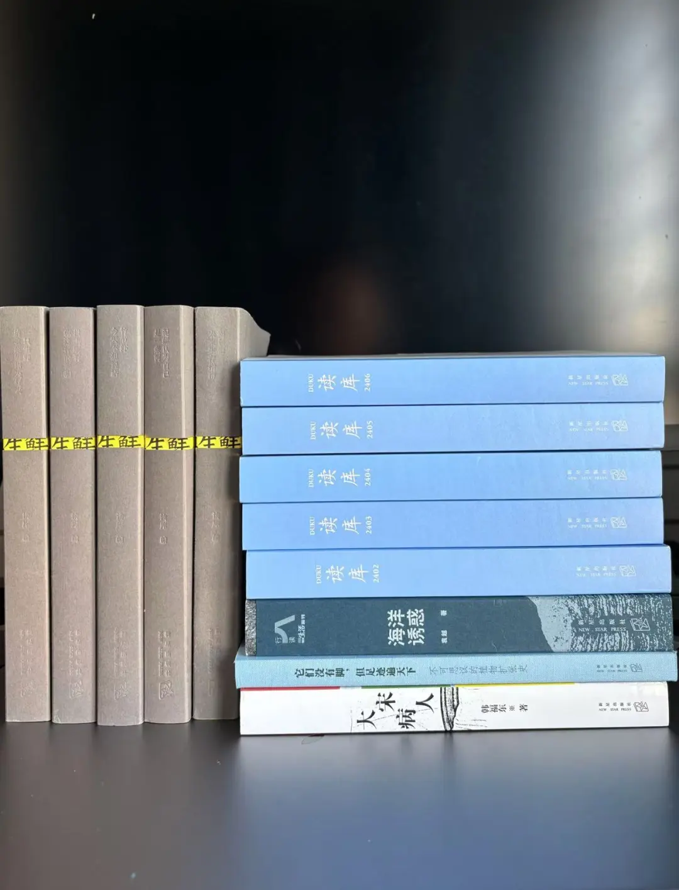
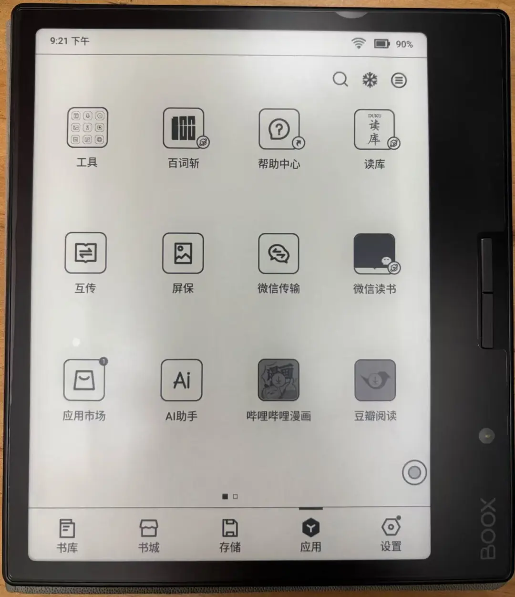

2024年读书笔记

2014 年开始用豆瓣标记读书，到今年 2024 年已整整十年。打开书影音档案，找到最关注的那个栏目「读过图书 653 」。653 是一个微不足道的数字，但这个数字却记录了这 10 年里我个人业余时间的全部，每天上下班通勤时间、外出办事的等待间隙、手术后病榻上难捱的至暗时刻、排队做核酸时的百无聊赖、平时陪孩子玩玩具写作业那些悠长的时光、还有失眠星人无数个失眠的夜晚…. 纪实、随笔、历史、文学、科学、非虚构、商业、编程、社会学…. 几十个类型林林总总看得出来我是一个阅读“杂食动物”，主打一个好读书，不求甚解。2024 年已经过去了，正是回首一年阅读之旅的好时机。一些年初翻阅过的书，内容在记忆中早已渐渐模糊，刚好重新拾起、再度品味。我粗暴将2024 年定为 AI 阅读元年吧，把书喂给 AI 让 AI 总结不失是一种新的高效阅读方法，不过作为 old school 的读者，我一时半会还接受不了这种读书法。
但今年解锁了另一种新「读」书法 —— 听书。可能因为我不是一个专注的人，一直感觉听的信息密度太低，多次尝试后又放弃。而这次选择一些个人成长类工具书籍，因为这种书往往整本书下来只需抓住几个关键知识点，这些知识点会车轱辘话反复说，这次听进去了。 不过就「听」而言，听得更多的还是播客，今年读了好几本书是因为某期感兴趣的播客的延伸而来。
从数据面来看，2024 年共读 82 本书，听 5 本，读 77 本。感谢又是书籍陪伴的一年，借用手上在读书中的话「携书如历三千年，无书唯度一平生」，来年也要继续 stay hungry, stay reading。

（今年的年度报告，补标的两本没再刷新）TL’DR
在冗长无聊的流水账报菜名之前，先列2024 年最喜欢的 10 本书。
- 世上为什么要有图书馆
- 鱼不存在
- 天生就会跑
- 认知觉醒 : 开启自我改变的原动力
- “无责任”的帝国 : 近代日本的扩张与毁灭 : 1895-1945
- 跨越不可能 : 如何完成高且有难度的目标
- 刀锋人生 : 打开心外科医生的心
- 海洋诱惑
- 超越百岁 : 长寿的科学与艺术
- 中文打字机 : 一个世纪的汉字突围史
完整阅读清单
读库
作为读库 10 年老读者，尊贵的 L 套餐订阅者，读库是个人阅读占比最大的出版单位。但25 年决定放弃 L 回退到 M。一是个人阅读能力有限，一次三本，特别是大册子动辄七八百也起读不完啊，24 年的大册子一本没读；二是并不是每一本大册子都符合自己的阅读兴趣，比如 《秩序之诗 : 花朵、建筑、埃舍尔》这本完全读不进去。
而今年读库和盒马联名的新品牌《读库生鲜》，是“更符合年轻读者的 MOOK”。《读库》是“有趣，有料，有种”，生鲜则是“新鲜，多元，深入，易读”。第一期是作为大册子一起发给 L 套餐用户的，这件事也引起了比较大的争议。读完第一期我还觉得不错，瞬间有了依然是年轻人的自我感觉，补上了全年票，可很快失去了新鲜感，后面几期符合我阅读习惯的文章不多，阅读体验着实一般。消费再次降级，25 年也不再订了。

MOOK
- 读库2406
- 读库2405
- 读库2404
- 读库2403
- 读库2402
读库生鲜
- 面包蟹未来生存指南
- 竹节虾今天不想说话
- 泥螺认为自己是一条河
- 世上哪有你这样的海胆
- 一只生蚝请求添加你为好友
小册子
- 它们没有脚，但足迹遍天下 : 不可思议的植物扩张史
- 大宋病人
- 海洋诱惑
非虚构
确切的说应该是除读库以外的非虚构，这也是个人阅读类型最大的一类。
- 鳗鱼的旅行 : 一场对目标与意义的探寻
关于鳗鱼的科普和自己与家人的随笔双线穿插叙事，一面是好几代人寻找鳗鱼的生命历程，另一面是记录父子之间通过鳗鱼关联的美好时光。文字优美又不失硬核科普。在书中作者对鳗鱼无法人工养殖，人类又大量捕捞导致鳗鱼即将灭绝感到忧心忡忡，不过查了一下不必担心，现在鳗鱼养殖已经非常普遍，想起看过的一条新闻“去日本吃鳗鱼饭的鳗鱼基本来自中国”。
- 鱼不存在
年度十佳之一，本书是斯坦福大学的建校校长大卫·斯塔尔·乔丹的传记，也是作者露露·米勒探究自我的心路历程。 乔丹是一个坚毅的人，他面对世界的无序和生活的混乱、面对家人朋友的不理解和离去、面对三十年的心血散落一地，在废墟中他选择了坚毅，拿起了绣花针将标签缝在鱼身上。 同时乔丹也是优生学的倡导者，而优生学后来被一位欧洲人学去并付诸实践，这个人叫希特勒。他为了提高捕鱼的效率使用毒药无差别毒鱼，而斯坦福大学赞助者之一简·斯坦福的死也和毒药有关，虽然并无证据于大卫有关，但种种迹象让人也不免猜测。
- 巫蛊乱长安 : 汉武帝晚年的夺嫡暗战
- 太后西奔 : 帝国晚期的仓皇与激荡
谭木生老师的两本书，《巫蛊乱长安》比较暗黑，雄滔武略汉武帝本人、外戚、军功集团、刘氏宗室一个个权力的游戏玩家，为了至尊帝位掀起巫蛊大戏尔虞我诈你死我活，甚至虎毒食子。另外这本书涉及人物比较多，对古代历史没那么熟悉，读得比较累，也很快就忘光了。 而《太后西奔》读起来就更轻松，毕竟也就 100 多年前发生的事情。不过这本可能作者个人的偏好比较突出，书中对太后的描写有些刻板，平日里高高在上的太后在境遇中目光短浅、仓皇失措、撒泼耍赖，就是一个普通农村老太太，还挺逗的。对晚清宫廷大臣们的群画像也很鲜活，有史料也有演绎，不过总体还逻辑自洽。
- “无责任”的帝国 : 近代日本的扩张与毁灭 : 1895-1945
强烈推荐，精华在最后两节。抬神轿的比喻太到位了。有权力无责任的天皇，有责任无权力的国民，狂妄自大的青年军官和极端主义者是造成日本一步步走向毁灭的主因。
- 马拉松名将手记 : 42.195公里的孤独之旅
“田径赛80%靠的是体能，而跑马拉松时体能只占大概60%，剩下的40%考验的则是人的精神力量”。 “无论比赛结果是好是坏，这一路我都毫不妥协的走过来了，因此只要站在起跑线前，我就有成就感。” “越是辛苦的时候，越不能看着前方，而是要看往下看，看着自己一步步的前进，这样就不觉得辛苦了” 很多金句，作为跑步爱好者有强烈的共鸣，会被激励到。 亚洲马拉松（曾经）跑得最快的男人的跑步手记，分享他跑步和比赛的一些心路历程。大迫杰从小就有一股不服输的劲，每当看到比自己强的人就会想比他更快，从而更努力去奔跑，但在这个过程中成功过、失败过、迷茫过，直到将参加俱乐部成为职业选手，逐渐明白这项运动真正的奥义。
- 天生就会跑
这本书让我捡起了跑步，并将跑步的热情推向了最高点，每次深夜看到书中那些极度热爱跑步的偏执狂们的故事甚至都想立马冲出去跑上一圈。这本书主要讲墨西哥的铜峡谷，隐居着史上最强的长跑族群塔拉乌马拉人，跑步于他们而言如吃饭喝水一样重要。作者通过和塔拉乌马拉人接触探得跑步的真谛。同时书中也介绍了很多耐力跑名将的故事，这些偏执狂虐自己的方式令人发指。 正如书名，天生就会跑。跑步是人类能够生存下来，并分布在地球各个角落的基础。在远古时期奔跑可以带来食物，也可以避免自己成为食物；可以找到心仪的伴侣一起追寻新的生活。必须爱上奔跑，否则就不可能活下来，更不可能有机会去爱别的东西，奔跑是有机会去爱别的东西。奔跑是我们所爱与所渴求的，是藏于血脉最深处的遗传。 而对于现代人来说，早已不需要通过奔跑来解决生存的问题，但跑步却可以为我们带来健康。进化史决定了人类要保持健康就必须经常进行有氧运动，而跑步则是最简单的方式，因为我们天生就会跑。 在书中看到一个研究不可思议，根据 2004 年纽约马拉松的成绩计算出各年龄组的平均成绩，发现从 19 岁开始，选手随着年龄的逐渐增长，成绩逐渐提高，到 27 岁达到巅峰。27 岁之后平均成绩开始下滑，令人震惊的是可以持续 45 年一直到 64 岁才会下滑到 19 岁的水平。人类真是一种离奇的生物，几乎一辈子都保持着强大的跑步能力，天生就是为跑步而打造的机器。 「你不是因为变老而停止跑步，你是因为停止跑步才变老」 看到这样激励人心的话还能忍住不跑吗？反正我 3 个月跑了 470km。
- 控糖革命
为控糖提供了一些理论依据，看完这本书可以在劝家人少喝奶茶时可以给出一些血糖峰值的危害案例。另外书中提到了一个饮食顺序建议感觉很有用，核心就是先吃纤维再吃蛋白最后吃淀粉和糖类也就是碳水，因为纤维就能在肠道形成网状结构，这种结构不仅能使食物进入消化系统的速度变慢，甚至还可以减少这些食物块的数量。但感觉这个吃饭顺不适合咱需要菜下饭的中国吃法啊。
- 疯狂的尿酸 : 不止是痛风 读这本书最大的收获是知道了尿酸不止跟痛风套餐啤酒海鲜老火靓汤有关，影响更大的其实是糖，尤其是果糖。另外大半本都是作者在贩卖他的一些所谓的饮食指南。
- 超越百岁 : 长寿的科学与艺术
这本太火了，网上看到的总结已经不下十篇，我也整理成 ppt 在组里分享过。核心是要长寿更要健康的长寿，战略上了解死亡四骑士「心脏病」「癌症」「神经退行性疾病」「2型糖尿病」，战术上多运动多运动多运动、控糖、有个好的睡眠和心情。
- 刀锋人生 : 打开心外科医生的心
斯蒂芬·韦斯塔比心脏手术专家及人工心脏专家，延续了上一本书《打开一颗心》的高质量。与《打开一颗心》中对一台台手术的震撼描写不同的是，正如副标题「打开心外科医生的心」，这本更多是自我剖析和对体制的探讨，但也少不了精彩的手术案例。手术台下韦斯塔比可能是一个暴脾气、自负、膨胀的老白男，但手术台上的韦斯塔比绝对是个好医生。
- 东京解剖书
去日本前翻了翻，比较系统介绍东京的旅游景点，不过感觉这种书现时可能不如小红书实用。
- 有限与无限的游戏 : 一个哲学家眼中的竞技世界
“这个世界上有两种游戏，一种是有限的游戏，一种是无限的游戏”。 “所有的有限的游戏都是以取胜为目的。无限游戏是以延续游戏为目的的” 想起网络上很流行的一句话，“不要给自己的人生设限”，也就说要把人生当成无限游戏，在这个无限游戏中我们又要参与很多有限游戏，升学、晋升、从小到大的比赛，和身边人的各种攀比…. 但这书吧挺绕的，看了一周说实话也没看懂，摘录了一些金句。
- 荒野上的大师 : 中国考古百年纪
好像也是忽左忽右节目的延伸，看时没做笔记书中内容都不太记得了，民国大师们的故事读了太多，差不多都是这些事。但想起一个事情，在东京国立博物馆东洋馆看到的石佛和在南山博物馆看《鲜卑融合之路》时看到的石佛，有强烈的感触，很复杂不展开也没法展开说。也想到书中梁思成抢在日本专家之前对古建筑进行考察，也有没来得及考察被军阀、被当地政府拆除的古建筑。总之心情很复杂。
- 我的母亲做保洁
用两个晚上看完了这本书，忍不住放下，特别喜欢这种朴实真诚的文字。同时也是第一次了解到深圳的保洁大叔阿姨群体，每天在公司、在商场、在小区里、在马路上看到的这些穿着统一服装的保洁员，他们的背后的故事既鲜活又雷同，和所有中国家长一样，他们付出都是为了儿女。另一方面，干净的都市也离不开他们的劳动。我在想，等他们老去，接替他们的会不会我们呢？“清理男厕所的x大叔，年轻的时候是一名程序员，因为职业原因有严重的颈椎病、肩周炎，这些长年累月积累下来的病痛会影响他的工作效率…” 这些职业原因的毛病好像本大叔也有哦…
- 甜与权力 : 糖在近代历史上的地位
这本书应该是看到陈晓卿老师多次推荐，讲糖与资本主义兴起、与人们的饮食习惯乃至社会地位的关系，甚至某一段时间对国际政治的影响。从现代生活中去看糖的历史地位有些不可思议，其实理解了糖长期以来也是一种瘾品就理解了。
- 印尼 Etc. : 众神遗落的珍珠
通过深度体验当地人生活来介绍一个国家的人文历史，是我很喜欢的一种叙事方式。 科学迷宫里的顽童与大师 : 赫伯特·西蒙自传 之前群友推荐了一本书，《思维的信息加工论》看名字就很硬核，这本硬核的书看不进去。读了这本自传才知道司马贺真是神一样的人物。任何单一成就都是大师级别，可怕的是他能一人包揽，看过最好传记之一。老实说书中介绍的一些研究话题是完全看不懂的，但也不妨碍跪着读完。
- 我是谁？ : 段义孚自传
一开始以为是爱国实业家的自传🤣，后来才想起那是卢作孚。第一次听段义孚的名字，却意外发现这本书写得那么好，细腻真诚。看到其他评论说段先生是“地理学白先勇”猛点头，就是这感觉。
- 茶馆 : 成都公共生活的衰落与复兴，1950-2000
王笛老师的书优点是细，缺点也是细，太琐碎了。不过他搞的就是微观史，这本明着是讲49以后社会变革对茶馆的影响，实际上也是透过茶馆看老百姓生活的变化，也是一个城市的变化。由于无法避免涉及到历次政治变革，简中就不要想了。
- 自由与爱之地 : 入以色列记
深度游记，但有个问题作者是中国人读起来有点翻译感。
- 股票大作手回忆录
群里炒股的群友们多次聊过的书籍，因为不炒股，也不太懂书中写的那些做空手法。就觉得很厉害，毕竟赚了那么多钱，但也不知道厉害在哪。作为人物传记本身来说，还是挺传奇的。
- 世上为什么要有图书馆
太太太好看了，作为豆瓣年度图书，这本书有多好相信大家都已经读过或者通过各种途径了解到了。反正我看完立马强烈安利给身边一众朋友。从0到1建设一个图书馆听着就很难，实际上也不容易，推荐每一位爱书的人看。深圳也有很多很棒的图书馆，以后要多去，要让图书馆建设者的心血得到回馈，让书籍能被尽量多的阅读。
- 杀戮季节 : 1965—1966年印度尼西亚大屠杀历史
快速翻完，极其震撼、沉重。快速翻了一遍，看完在想，我为什么花几个小时看这本书。给自己的答案是，了解到了这个世界的多样性，在美好之外也有如此凶残的一面，作为个体可能我们无力抵抗这些凶残，但也不要不知道它存在这一面。
- 中亚行纪 : 土库曼斯坦、哈萨克斯坦、塔吉克斯坦、吉尔吉斯斯坦与乌兹别克斯坦之
对中亚五个斯坦的了解，仅仅来自足球，比如乌兹别克的本尤德科，比如曾经的南昌衡源有一位来自乌兹别克的外援“棉农”大叔… 可以结合刘子超的《失落的卫星》一起读，对比男性和女性不同的视角对五国的观察。
- 中央帝国的军事密码
- 中央帝国的哲学密码
- 中央帝国的财政密码
郭建龙老师这套中央帝国三部曲，不同视角解读帝国。搞帝国如搞公司，搞人搞钱搞文化，一千多年来来回回就这些事情，太阳底下无新事。 读下来感觉军事这个视角是最宏大的，用这样一本400多页的书写下来有点简略，不过也是不错的历史科普。另外这本书最大的硬伤是没有附上地图，只从文字中很难理解地利对战争的影响。
- 洋盘 : 迈阿密青年和上海小笼包
美国沪漂写上海生活、美食和家族史，外公在北京长大。
- 月亮照在阿姆河上
一向喜欢罗新老师的游记，有趣有料。不过这本有些零散，读起来比较跳跃。
- 熊廷弼之死 : 晚明政局的囚徒困境
好书，为熊廷弼的一生也为大明一声叹息。本是作为读秋原老师「巨」作 地虎噬天王 : 后金崛起的地理与自然环境因素综述做明朝辽东治理背景知识补充的，一年了也没开始读《地虎》。
- 从开国斗到亡国 : 明朝残酷权力斗争全史
哪个帝国不是这样呢？与天斗与人斗其乐无穷。
- 额尔古纳河右岸
被董宇辉带火的老书，看的时候总是会代入《雨果的假期》中的柳霞。妮浩太惨了，一直在救人一直在生育，可就是没有儿子。感叹鄂温克人在严酷的环境中与大自然顽强斗争又和谐共处，然而在工业文明的当下，这种原始社会的生活方式必然会覆灭，但他们展现了他们“野蛮”的骄傲。
- 中文打字机 : 一个世纪的汉字突围史
人类文明几千年最终能流传下去的必然要适应技术的变革，所幸中文在信息革命时代渡过了这一关。
技术及自我提升类
- 跨越不可能 : 如何完成高且有难度的目标
英文版读了一半读不下去换了中文版。非常好，还没有读透，二刷后再来写笔记。
- 长期主义
主要记录了贝索斯写给股东的 20 封信，专注用户体验和长期价值。他成功了他说什么都对。
- 一人公司 : 失业潮中的高新技术工作者
在当下大环境下可以读一读，如何面对失业比如何再找到工作更重要。
- 认知觉醒 : 开启自我改变的原动力
这本书让我很纠结，时好时不好。需要打鸡血时，每一句都是金句，每一句都是鸡血。不需要打鸡血时，这书不就是书中所写的即时满足吗？一本认知数据合集缝合怪，读完会让你有一种认知升级的感觉。好吧，但从知识点来说确实非常密集，按照书中内容来说，必须要思考，否则只是浅层阅读没什么意义。 写了一篇很长的笔记，也按照书中提到的一个方法练习了一段时间，写「每日反思」，但没坚持下去。
- 思考，快与慢
以前觉得这本书絮絮叨叨废话连篇不屑于看，这次花了三周慢慢细品，是一次丰满又惊叹的阅读体验，对于学习和思考有了新的认知。非常喜欢。
技术
今年技术书读太少，要反思。
- Linux内核观测技术BPF
便概念科普的一本书，快速读一遍心里有个底，后面要花更多时间来实践，深入学习。要不是现在翻出来都不记得我还花时间去学了 BPF。 搞定系统设计：面试敲开大厂的门 YouTobe 著名 up 主 ByteByteGo 的书。快速翻了翻，说实话内容比较浅显乏味，说白了就是八股文。可以提供一个基本的思路和方法论，真正要做相关的系统设计还是要复杂得多，不推荐读。
- Web性能权威指南
书有点老了，不过内容也不算太过时，尤其是前面几章关于TCP/UDP/TLS的内容。作为一个不懂前端的后端，后面几张关于浏览器性能优化的内容收获比较多，当然前端技术变化更快，也许已经过时了，但对我来说也是扩展了视野。
- 程序员的README
非常适合新手，对于我这种老家伙觉得比较有价值的每章最后推荐的延伸阅读书籍。
听书
- 哈佛经典谈判术
书中提到一些方法论。谈判是综合性技能，涉及策略、心理、道德和实际操作。成功的谈判重视创造价值和维护长期关系。谈判技能提升需要实践，学习和不断反思。
- 情绪
听完感觉一般。学到一个新的概念“大脑的感受大部分来自于大脑自己的创造而不是真实世界的反馈”，一个小 tips 压力大时做一些小事，焦虑时写日记。
- 毫无意义的工作
感觉一般，在当前职场环境这么恶劣的环境下有一份“狗屁工作”就不错了，在一定程度上来说狗屁工作意义可大了，要没这些狗屁工作一大堆人要失业。维持社会正常运行创造社会财富不是很有意义吗。当然啦，从个体而言，在还是要尽力摆脱狗屁工作，做更多有意义的事情，我想表达的是狗屁工作也是社会运转的一部分。
- 精力管理
书中写到的饮食和《控糖革命》的思路差不多，避免葡萄糖峰值。怪不得每天吃完午饭就困得不行，全是碳水。另外书中提到的情绪确实影响很大，一天天又累又丧。
- 时间贫困 : 如何利用时间，决定了我们是谁
书中说道我们的可支配时间最好是2-5小时/天，如果低于两小时，我们就会陷入时间贫困，如果高于5小时，我们就会陷入缺乏目标感和意义感的无所事事的痛苦。 对于我们 2 娃打工中年人来说每天2-5小时自由时间简直不要太奢侈，生活、工作、兴趣、学习完全应接不暇。书中的一些方法对于时间贫困如我无法执行，所以这书不适合我。
文学
文学小说基本上是读不进其他书时穿插读的。
- 诗人十四个
这两年陪着孩子读古诗词，没想到小时候很讨厌背诵的古诗词，年纪大了却越发喜欢。黄晓丹老师这本书强烈推荐，让我领略到古诗从未理解到的美。
- 当我谈跑步时我谈些什么
跑步这么一件简单、枯燥的事情，只要你做得足够久，那便也成了哲学。跑步是一件孤独的事情，绝大部分时间没有对手也没有队友，就自己一个人在长长的路上双脚交替往前，跑向终点。这本小书村上老师写的是跑步是写作，也是人生。
- 奇山飘香
- 难民
- 同情者
这三本都是关于越南移民认同感的小说，来自忽左忽右的延伸阅读。
- 边水往事
因为电视评价不错，用碎片时间翻了翻。不是很喜欢，感觉故事会一样。
- 强风吹拂
- 无爱的世界
- 假如岁月足够长
- 真幌站前多田便利屋
- 真幌站前番外地
- 真幌站前狂骚曲
- 哪啊哪啊神去村
- 哪啊哪啊神去村 夜话 : 系列第2弹
- 编舟记
这 9 本都是三浦紫苑的小说，先是因为跑步读强风吹拂，读完后发现很吃三浦老师的写作套路，一口气读到腻。三浦老师的写作套路基本上是双男主，从事冷门工作，如马拉松、便利屋、字典编撰者、林业工作者，人物之间充满温情又不失力量，以柔和的笔触描绘生活中的点滴美好和人性的善良。对，就是「治愈」。
- 疼痛部
看群友们强烈安利的，但我对文学的欣赏能力不足，很难阅读这种故事性不强的文学作品，勉强算读完。
- 食南之徒
亲王新作无需多说。故纸堆里翻出的片言只语都能脑洞出这么有意思的小说，只能说亲王太强了。
英文
为了保持英文阅读，今年一般上班路上精神饱满能更专注时会读英文书，但下班路上死气沉沉往往就读不进去了，所以读得也不多。英文书以工具类书籍为主。
- The Effective Engineer : How to Leverage Your Efforts in Software Engineering to Make a Disproportionate and Meaningful I
要做高时间杠杆的事情，或者是做事要讲究ROI，书中总结了一些工程师的效率方法论、工具和思维。其实大部分也是我们在用的，个人角度的很值得学习，比如GTD、写单测、重复的事情自动化。团队的角度则需要一定影响力才能做到，比如招聘、入职metor等。但在真实的职场很多低效的事情真的很难避免，比如冗长的流程，没完没了的会议。
- Atomic Habits : An Easy & Proven Way to Build Good Habits & Break Bad Ones
几本习惯养成类的书看下来，其实核心理念都一样的，提示，渴望，反应，奖励。看完才知道《掌控习惯》就是这本书的中文版。
- Tiny Habits : The Small Changes That Change Everything
《福格行为模型》的原书，和之前看中文版完全不一样的感觉，中文版看得快就觉得“嗯，很有道理”，仅此而已。但英文版看得慢，一天看不了几页有大量时间反刍、思考、践行，收获可以说是巨大的，这本书还会再读再思考。
- The Simple Path to Wealth : Your road map to financial independence and a rich, free life
美国人的「通往财富自由之路」，保持现金流，将多余的现金全部买入美国全指数基金，要有自己的生意，打工是不可能发财的。
晒设备
最后晒一晒今年的新设备，今年的个人好物 TOP1，BOOX leaf3。比 kindle 大，比 kindle 开放，显示效果不如 kindle 但也够用。
